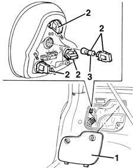
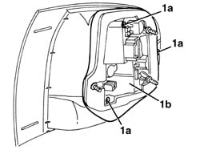
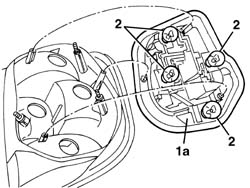

5540A54 SINGLE TAIL-LIGHT BULB(ONE), LH OR RH - R R
- Path
- Procedures > 55 ELECTRICAL EQUIPMENT > 5540 EXTERIOR LIGHTING > 5540A LIGHTING > 5540A54 SINGLE TAIL-LIGHT BULB(ONE), LH OR RH - R R
- Kind
- repair procedure (removal / refitting; the operation number is the code)
- Applies to
- all engines; all production periods
- Interactive page
- https://sloeber94.github.io/elrnDB-fMltpl/en/#/2891919
Applies to: all engines; production: fino a 05/99, da 09/03, da 06/99 a 03/02, da 04/02 a 08/03, fino a 05/04
 Removing
Removing
 Refitting
Refitting1. Open the tailgate and remove the side cover.
2. Rotate and extract the bulb holder with the bulb concerned.
3. Extract the bulb.
Bayonet fitting

Applies to: all engines; production: fino a 05/99, da 09/03, da 06/99 a 03/02, da 04/02 a 08/03, fino a 05/04
Refitting
RemovingCheck the operation of the bulb.
Refit the bulb in the bulb holder.
Refit the bulb holder with the bulb.
Refit the cover.
Check the operation of the rear light cluster lights.
Applies to: all engines; production: da 06/04
Removing
RefittingOp. 5540A44 L/H OR R/H TAIL LIGHT (ONE) - R+R
- Undo the bolts (1a) fixing the light cluster bulb holder (1b).

Applies to: all engines; production: da 06/04
- Remove the bulb holder (1a).
- Remove the bulb involved (bayonet fitting).

Applies to: all engines; production: da 06/04
Refitting
Removing- Check that the bulb is working.
- Position the bulb holder and secure it using the bolts.
- Op. 5540A44 L/H OR R/H TAIL LIGHT (ONE) - R+R
- Check that the rear light cluster lights are working.